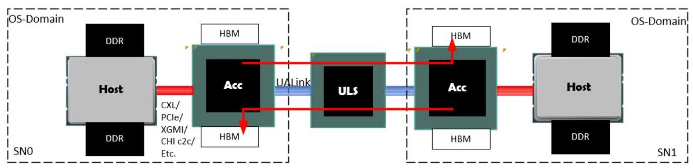
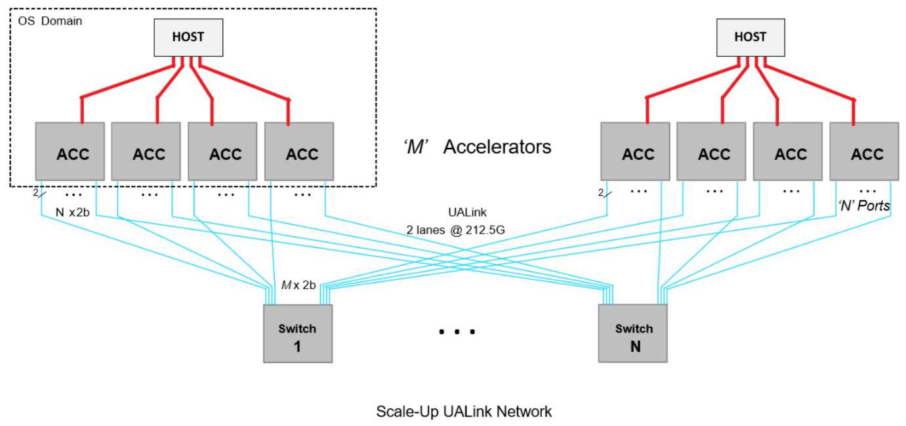
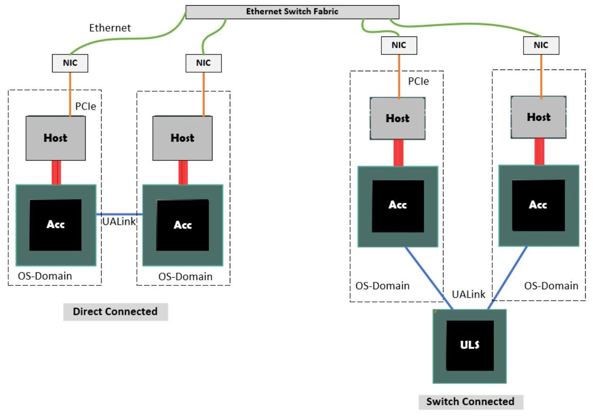
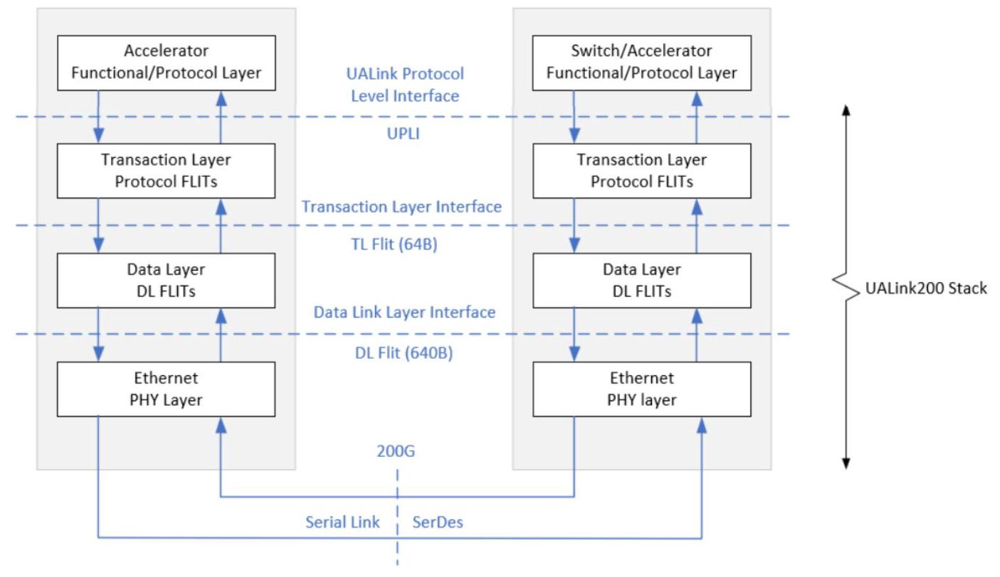
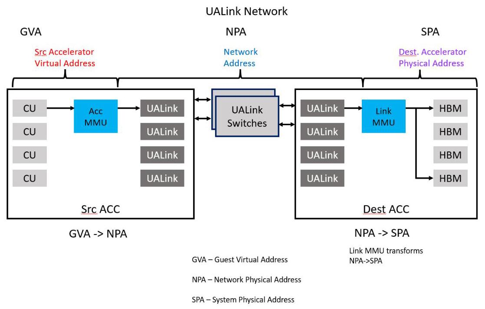
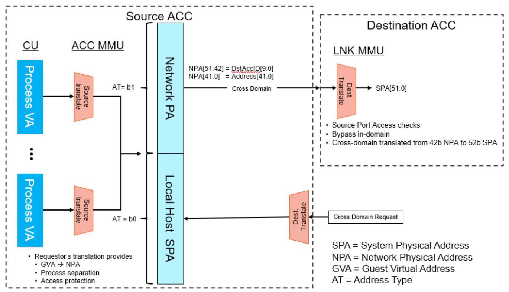

Chap1 translated
Preface & Chap 1
前言
About This Specification
This specification is intended to define a set of protocols and interfaces that enable the creation of systems comprised of multiple System Nodes targeting AI applications. A System Node typically contains one or more Host CPUs and one or more Accelerators connected within the System Node utilizing an implementation specific set of interconnects such as CXL 庐, PCIe 庐, XGMI, CHI c2c, AMD Infinity Fabric 庐, etc. These System Nodes can be and often are coherent within the System Node, meaning that each Accelerator and each Host CPU can directly and coherently access all Host and Accelerator memory within the given System Node though this is not required. The exact configuration and number of Accelerators and Hosts within a System Node and the nature of the coherence and accessibly to memory within the node is implementation specific and is not mandated by this specification. Each System Node is typically managed under the control of a single OS image (System Nodes are also referred to as "OS Domains").
本规范旨在定义一套协议与接口，使得能够构建由多个系统节点组成的、面向人工智能应用的系统。一个系统节点通常包含一个或多个主机 CPU 与一个或多个加速器，这些组件在节点内部通过一组特定实现的互连（例如 CXL®、PCIe®、XGMI、CHI c2c、AMD Infinity Fabric® 等）进行连接。这些系统节点可以而且常常在节点内部保持缓存一致，这意味着节点内的每个加速器和每个主机 CPU 都可以直接且一致地访问该节点内的所有主机内存和加速器内存，但这并非强制要求。系统节点内部加速器与主机的具体配置及数量，以及节点内内存的一致性语义和可访问性，均取决于具体实现，本规范不予强制规定。每个系统节点通常由单一操作系统映像进行管理（系统节点也被称为“操作系统域”）。
The protocols and interfaces defined in this specification are intended to support low latency Accelerator-to-Accelerator communication across System Nodes using direct read, write, and atomics transactions. These protocols and interfaces do not, however, allow for Host CPU accesses to memory attached to device or host in another remote System Node.
本规范定义的协议和接口旨在支持跨系统节点的低延迟加速器间通信，使用直接读、写和原子事务。然而，这些协议和接口不允许主机CPU访问另一远程系统节点中连接到设备或主机的内存。
The interfaces described in this specification are the UALink Protocol Level Interface (UPLI) and the Ultra Accelerator Link (UALink) interface. The UALink Protocol Level Interface is a point-to-point, on-chip interface comprised of various channels that transfer UPLI transactions consisting of Requests, Read data, Write data, and Request Responses between an Originator and a Completer. The Ultra Accelerator Link is a high-bandwidth point-to-point serial interface providing a connection between Accelerators and Switches that allows UPLI transactions to be transferred between Originators and Completers in Accelerators within and across System Nodes. This specification is primarily intended to create a switching ecosystem for Accelerators.
本规范描述的接口包括 UALink 协议层接口（UPLI）和超加速器链路（UALink）接口。UALink 协议层接口是一种点对点片上接口，由多种通道组成，这些通道用于在发起方与完成方之间传输 UPLI 事务，事务中包含请求、读取数据、写入数据以及请求响应。超加速器链路是一种高带宽点对点串行接口，提供加速器与交换机之间的连接，使得 UPLI 事务能够在系统节点内部及跨系统节点的加速器中，于发起方与完成方之间传输。本规范的主要目的是为加速器创建一个交换生态系统。
The figure below Figure 0-1 UALink Connectivity Overview, illustrates a portion of a simple example system illustrating two (of possibly many) System Nodes (SN0 and SN1) each illustrating one (of possibly many) Host/Acc pairs in each of the System Nodes.
下图 Figure 0-1 UALink 连接概览展示了一个简化示例系统的局部，系统中示出了两个（可能有许多）系统节点（SN0 和 SN1），每个节点各示出一对（可能有许多）主机/加速器对。

Figure 0-1 UALink Connectivity Overview
图 0-1 UALink 连接性概览
The illustrated Host and Accelerator (Acc) in each of the system nodes are connected using an implementation chosen interconnect such as CXL, PCIe, AMD Infinity Fabric, XGMI, CHI c2c, etc. (red) that can and often allows for Host and Acc access to all memory within the node or at least on the connected Host and Accelerator. The Accelerator is further attached to a set of UALink Links (blue) that connect to a Switch and then on to another set of UALink links to the remote Accelerator allowing UPLI transactions to be routed between Accelerators in different System Nodes (accesses can also be routed between Accelerators in the same System Node).
图示系统节点中的主机（Host）与加速器（Acc）之间通过实现自选的互连方式连接，例如 CXL、PCIe、AMD Infinity Fabric、XGMI、CHI c2c 等（红色部分），通常可允许主机和加速器访问节点内的全部内存，至少可访问所连接主机与加速器上的内存。加速器进一步连接至一组 UALink 链路（蓝色部分），通过交换机和另一组 UALink 链路到达远程加速器，从而使 UPLI 事务能够在不同系统节点中的加速器之间路由（同一系统节点内的加速器之间也可路由访问）。
Preface
本文件规定了超加速器链路（UALink），这是一种高带宽、低延迟的互连协议，旨在将加速器（例如GPU、AI芯片）在系统节点内部和节点之间连接起来，以支持大规模AI工作负载。其主要目的是通过交换结构在多达1024个加速器之间实现高效的直接内存访问和通信，同时明确禁止主机访问远程节点内存。
关键贡献包括：将UALink协议层接口（UPLI）定义为一种点对点的片上协议，用于请求、数据和响应；引入事务层，将UPLI通道打包为64字节的微片；数据链路层将这些微片聚合成640字节的微片，并配备控制和固件通信机制；物理层则基于IEEE 802.3 200/100 Gb/s串行标准，通过将每个640字节微片对齐到一个680字节的FEC码字来优化延迟。该架构引入了一个交换生态系统，包含逻辑交换机、物理交换机、Pod（所有已连接加速器的集合）以及虚拟Pod，虚拟Pod允许将系统安全地划分为相互隔离的租户域。借助网络物理地址（NPA）的地址翻译模型，可通过内存管理单元实现跨节点内存访问，而所有路由均基于标识符而非地址进行。
该规范有意省略了加速器之间的硬件缓存一致性，转而依赖软件管理的一致性（在内核边界处进行缓存刷新）。它确保了I/O一致性语义：读操作能获取最新数据，写操作则会使目标节点内的缓存失效或合并。本文件为一种标准加速器结构奠定了基础，该结构支持直接的加载/存储访问、对称多端口扩展以及多租户隔离，且无需为供应商特定的定制协议而对交换机进行改动。
前言
Ultra Accelerator Link Consortium Inc. (UALink) - UALink_200 Rev 1.0 Specification
Ultra Accelerator Link Consortium Inc. (UALink) - UALink_200 修订版 1.0 规范
In a typical system, Requests from a given Accelerator in one System Node to a remote Accelerator in a different System Node may access any Accelerator memory or Host Memory in the Remote System node. This is illustrated above by red arrows above showing each Accelerator accessing the remote Accelerator's memory (Host and Accelerator accesses to local Host and Accelerator memory are not shown). Hosts accessing any memory in any remote System Nodes shall not be supported.
在典型系统中，来自一个系统节点内某个加速器向另一系统节点内远程加速器发起的请求，可访问远程系统节点中的任意加速器内存或主机内存。如上图红色箭头所示，每个加速器均可访问远程加速器内存（加速器与主机对本节点内的主机及加速器内存的访问未显示）。不支持主机访问任何远程系统节点中的任何内存。
This version of the specification does not define or enable attaching devices to the Switches. It does not define or enable how to perform in-network, in-memory, or near-memory compute.
本版规范未定义亦未支持将设备连接至交换机，也未定义或支持如何执行网络内计算、内存内计算或近内存计算。
Terminology
The following terms are used in this specification:
本规范中使用以下术语：
| Term | Definition |
| UALink | Ultra Accelerator Link |
| UPLI | UALink Protocol Level Interface |
| DL | Data Link Layer |
| DL Channel | Logical channels with in DL, one for TL Flits, one for DL UART messages |
| SH | Segment header, used with in a DL Flit |
| FH | Flit Header, for DL Flit |
| DL alternative sector | Sectors in a DL Flit that are sued for non TL Flits |
| DL message | Message that starts and terminates at the DL |
| CRC | Cyclic redundancy check |
| RS | Reconciliation Layer, interface between PCA and DL |
| AM | Alignment marker, used for alignment of PCS lanes |
| PCS | Physical Coding Sublayer |
| FEC | Forward error correction |
| PMA | Physical Medium Attachment Interface |
| GAUI | Gigabit unit attachment |
| VDCI | Voltage Domain Crossing Interface |
| SPA | System Physical Address |
| Field | A group of one or more signals that share a name and encode a specific piece of information. Signals within a field are numbered according to binary significance. |
| SOC | System on Chip. |
| SPC | Symbols Per Clock |
| Word | Two Bytes |
| Doubleword | Four Bytes |
| UART | Universal Anonymous Receiver Transmitter. A DL mechanism for F/W on either end of the link to exchange information. |
| Pod | The collection of all the Accelerators and Switches physically connected though UALink via Switches. |
| Virtual Pod | A non-overlapping partition of a Pod where the Acclerators within the Virtual Pod may communicate with other Accelerators in the Virtual Pod, but no other Accelerators in the Pod. |
| Availability | Security objective ensuring a resource (e.g., network) is functioning and data is accessible when needed |
| UALink Network | The physical network of UALink Links and Switches connecting the Accelerators in a Pod. |
| CC | Confidential Computing |
| Confidentiality | Security objective ensuring data are only readable by an authorized party |
| Front end network | Network used by OS domains to communicate and establish a Tenant TCB. |
| Infrastructure provider | An organization that maintains computing resources such as servers, storage, networking and virtualization and provides them to the users on demand. |
| Integrity | Security objective ensuring data are only writeable and modifiable by an authorized party |
| Pod Controller | Central controller software responsible for managing the lifecycle of the Pod including topology discovery, configuration, resource management, virtual pod creation and management and Pod health monitoring. The Pod Controller is typically owned by the Infrastructure provider. |
| Port encryption engine | A port encryption engine has at least one association (key, IV/count/sequence #, etc.) and enough encryption/decryption capability to keep up with line rates. Additionally, based on implementation, the port encryption engine may have buffering associated with each association such that it can precompute counter encryption values. An accelerator requires a port encryption engine per port. |
| Switch | An entity that can switch UALink traffic between a set of Ports equal in number to the number of Accelerators in the Pod. |
| Physical Switch | A physical hardware entity that can be used to implement a Switch and which can have Ports equal to he number of Accelerators in the Pod or Ports equal to an integer multiple greater than one of the number of Accelerators in the Pod. |
| TCB | Trusted Computing Base - The set of hardware and software components that are trusted to meet the security objectives of a feature. |
| TEE | Trusted Execution Environment. It is responsible for bringing an accelerator into the TCB and for UALsec configuration (e.g., key establishment). In the context of CC, TEE examples include Intel TDX, AMD SEV and ARM CCA). |
| Tenant | User of the infrastructure computing resources such as AI Cluster. In an AI cluster, the Tenant is typically assigned a set of accelerators (i.e., a Virtual Pod) to run its workload. |
| TVM | Trusted Execution Environment Virtual Machine. This is a confidential computing VM running in a TEE. One or more accelerators are assigned to a TVM which is responsible for secure configuration and management of those accelerators. |
| Virtual Pod | The logical subset of a physical pod connected over UAL. A virtual pod belongs to one user (aka Tenant). A physical pod can be partitioned into multiple, concurrent virtual pods, each presumably owned by |
Ultra Accelerator Link Consortium Inc. (UALink) - UALink_200 Rev 1.0 Specification
超加速器链路联盟公司 (UALink) - UALink_200 修订版 1.0 规范
| distinct Tenants. One virtual pod can be created and torn down without impacting other running virtual pods in the physical pod | |
| TSM | TEE Security Manager. This is SW/FW component on the host which establishes secure interface with the device and is responsible for configuring and helping enfoce TEE IO security policies on the host side. It is in the TCB of all TVMs |
| DSM | Device Security Manager. This is a FW component on the device that enforces device security policies. It communicates with the TSM over a secure channel and receives commands from TSM for configuring and enforcing device security policies. |
| System Node | Hardware platform that hosts Accelerators, alongside one or more Central Processing Unit(s) (CPU(s)) and one or more network interface(s). The System Node is the boundary of an OS Domain, and UALink System Nodes host a Node Management Agent. |
| Switch Platform | Hardware platform that hosts Switches, a Switch Management Agent, and a network interface. When present, Switch Platforms are distinct from System Nodes. |
| Node Management Agent | Firmware/Software component that manages Accelerators in a System Node under the direction of the Pod Controller. |
| Switch Management Agent | Firmware/Software component that manages Switches under the direction of the Pod Controller. |
In addition to the hardware requirements laid out by this specification, the complementary Ultra Accelerator Link Manageability Specification documents the requirements for firmware and software to manage and operate an Ultra Accelerator Link Pod.
除了本规范规定的硬件要求之外，配套的《超级加速器链路可管理性规范》还阐述了用于管理和操作超级加速器链路 Pod 的固件和软件要求。
1 Introduction
1.1 Multi-Node Accelerator System
The main purpose of this specification is to enable low latency and efficient communication between Accelerators. The Accelerators and the bandwidth allocated to each Accelerator can scale to meet the requirements of AI applications. illustrates an example system with multiple nodes, where each node has a Host processor and four Accelerators. The system has 'M' Accelerators in total and each Accelerator has 'N' Ports. The 'N' Ports are assumed to be symmetric, and traffic is spread across all the ports. Usually, a single OS image controls and manages each System Node (System Nodes are also called "OS Domains"). A set of UALink Switches connects the Accelerators together.
本规范的主要目的是在加速器之间实现低延迟且高效的通信。加速器及其分配的带宽能够扩展以满足 AI 应用的需求。本规范展示了一个包含多个节点的示例系统，其中每个节点包含一个主机处理器和四个加速器。系统总共有 'M' 个加速器，每个加速器具有 'N' 个端口。'N' 个端口被假定为对称的，并且流量分散到所有端口。通常，每个系统节点由单个操作系统镜像控制和管理（系统节点也称为“操作系统域”）。一组 UALink 交换机将所有加速器连接在一起。
The UPLI allows up to 1024 Accelerators or endpoints in a system to communicate using a 10-bit Identifier. The 10-bit Source and Destination Accelerator Identifiers are used by the Switch to route Requests and Responses between a sender and a receiver. All Requests shall carry Source and Destination Accelerator Identifiers, Responses also carry Source and Destination Accelerator Identifiers, but only need the Destination Identifier for routing, the Source Identifier is retained to aid in debugging.
UPLI 允许系统中最多 1024 个加速器或端点使用 10 位标识符进行通信。交换机利用 10 位的源加速器标识符与目的加速器标识符，在发送方和接收方之间路由请求与响应。所有请求必须携带源和目的加速器标识符，响应同样携带源和目的加速器标识符，但仅需目的标识符用于路由，保留源标识符是为了便于调试。

Figure 1-1 UALink Based Multi-Accelerator System
图 1-1 基于 UALink 的多加速器系统
As shown in Figure 1-1, the Accelerator Fabric Switch connects 'M' Accelerators through UALink Links that consist of UALink Lanes. A Lane is a pair of signals, one for transmit and one for receive, and UALink Lanes can be grouped into a one Lane Link (a x1 Link), two Lane Link (a x2 Link), and a four Lane Link (a x4 Link). The number of Lanes per Switch and the bifurcation capability of the Switches and Accelerators shall determine how many Accelerators can be connected per Switch.
如图 1-1 所示，加速器 Fabric 交换机通过由 UALink 通道组成的 UALink 链路连接 ‘M’ 个加速器。一个通道是一对信号，一个用于发送、一个用于接收，UALink 通道可分组为单通道链路（x1 链路）、双通道链路（x2 链路）和四通道链路（x4 链路）。每台交换机的通道数量以及交换机和加速器的分叉能力决定了每台交换机可连接的加速器数量。
A Pod consists of the largest number of Accelerators that are to be connected via UALink Switches. A Switch is defined as a logical entity having a number of ports (radix) equal to the number of Accelerators in the Pod. Each Port on the Switch shall connect to a distinct Accelerator. Unless partitioned, a Switch can connect any Port on the Switch to any other Port on the Switch. The number of Switches shall equal the number of Ports on the Accelerators (all Accelerators in the Pod should have the same number of Ports).
一个 Pod 由拟通过 UALink 交换机连接的最大 Accelerator 数量组成。交换机定义为具有若干端口（基数）的逻辑实体，其端口数等于 Pod 中 Accelerator 的数量。交换机上的每个端口应连接至一个独立的 Accelerator。除非进行分区，否则交换机可将自身的任意端口连接至自身的其他任意端口。交换机的数量应等于 Accelerator 上的端口数（Pod 中的所有 Accelerator 应具有相同数量的端口）。
Introduction
引言
Ultra Accelerator Link Consortium Inc. (UALink) - UALink_200 Rev 1.0 Specification
超加速器链路联盟公司（UALink）— UALink_200 修订版 1.0 规范
With these constraints, the UALink Switches connect the Accelerators in a Pod in a way that each Port on an Accelerator may intercommunicate with only a single port on each other Accelerator.
在这些约束条件下，UALink 交换机以如下方式连接 Pod 中的加速器：每个加速器上的端口仅可与每个其他加速器上的单个端口相互通信。
A Virtual Pod is a group of one or more Accelerators in the Pod that may communicate amongst themselves but not with any other Accelerator in the Pod. The Pod may be divided into Virtual Pods by partitioning the Switches into non-overlapping subsets of Ports on each Switch. The Ports within a subset can communicate with one another but not with any Port outside the subset. Switches shall provide a mechanism to configure partitions.
虚拟 Pod 是 Pod 中一组一个或多个加速器，它们之间可以相互通信，但不能与 Pod 中的任何其他加速器通信。通过将交换机划分为每个交换机上端口的不重叠子集，Pod 可以被分成多个虚拟 Pod。子集内的端口可以相互通信，但不能与子集外的任何端口通信。交换机应提供配置分区的机制。
The Switches in a Pod may be realized in hardware utilizing Physical Switches that have a Radix equal to the number of Accelerators in the Pod in which case the partitioning of the Physical Switch directly creates the Virtual Pods. If, however, the Physical Switch has a radix equal to an integer multiple greater than one of the number of Accelerators in the Pod, the Physical Switch shall first be partitioned into a number of Switches. These Switches may then be further partitioned to create the Virtual Pods.
Pod 中的交换机可通过硬件实现，利用物理交换机，其基数等于 Pod 中加速器的数量，在这种情况下，物理交换机的分区将直接创建虚拟 Pod。然而，如果物理交换机的基数等于 Pod 中加速器数量的整数倍（大于 1），则物理交换机应首先划分为多个交换机。然后这些交换机可进一步划分以创建虚拟 Pod。
All Accelerators in a Pod have a unique Accelerator ID, regardless of Physical Switch partitioning or Virtual Pod partitioning. All Accelerator Ports, and thus also all Switch Ports, in a Virtual Pod, share identical security (encryption/authentication) settings.
Pod 中的所有加速器都具有唯一的加速器 ID，无论物理交换机分区还是虚拟 Pod 分区如何。虚拟 Pod 中的所有加速器端口，因而也包括所有交换机端口，共享相同的安全（加密/认证）设置。
This Specification shall supports a max data rate of 200 GT/s per Lane and a max link width of 4 Lanes. A UALink Station (or simply Station) is defined as a group of 4 UALink Lanes. A UALink Station may be bifurcated to connect to one x4-UALink Links (or simply Link), two x2 Links, or four x1 Links. The UALink Links shall attach between UALink ports on two different Devices (in this figure, a port at the ACC and a port at the UALink Switch). The maximum bandwidth for each UALink Station shall be 800 Gigabits /s (Gbps).
本规范支持每条通道最高 200 GT/s 的数据速率，最大链路宽度为 4 条通道。UALink 站点（或简称为站点）定义为 4 条 UALink 通道的组合。UALink 站点可进行分叉，以连接一条 x4 UALink 链路（或简称为链路）、两条 x2 链路或四条 x1 链路。UALink 链路应连接在两个不同设备的 UALink 端口之间（在该图中，一个为加速器（ACC）的端口，另一个为 UALink 交换机的端口）。每个 UALink 站点的最大带宽应为 800 Gbps。
The signaling rate is usually higher (212.5 GT/s) to accommodate the bandwidth consumed by Ethernet Layer1 for Forward Error Correction Code (FEC) and additional Layer1 encoding.
信号速率通常较高（212.5 GT/s），以容纳以太网物理层为前向纠错码（FEC）及额外物理层编码所消耗的带宽。
1.2 Accelerator System Node
An Accelerator System Node may be comprised of one or more host processors, one or more Accelerators, and devices under a single OS domain. An Accelerator can communicate to another Accelerator either through a direct UALink link or through a UALink Switch. Communication between Accelerators inside a system node is called in-domain communication, i.e. within an OS-domain. Communication between Accelerators in differing system nodes is referred to as cross-domain communication.
一个加速器系统节点可以由一个或多个主机处理器、一个或多个加速器以及位于单一操作系统域内的设备组成。加速器可以通过直接的 UALink 链路或通过 UALink 交换机与另一个加速器通信。系统节点内部加速器之间的通信称为域内通信，即在操作系统域内。不同系统节点中的加速器之间的通信称为跨域通信。

Figure 1-2 Accelerator communication over a direct link and over a Switch
图1-2 通过直连链路和通过交换机进行加速器通信
UALink Switches shall enable a direct load/store access model for a scale-up Accelerator Pod with up to 1024 Accelerators. An Ethernet switched network shall enable the data center scale-out cluster of many thousands of Accelerators through Ethernet switches. This may be enabled through a front-side NIC attached to the host.
UALink 交换机应为最多包含 1024 个加速器的纵向扩展加速器 Pod 提供直接加载/存储访问模型。以太网交换网络应通过以太网交换机支持包含成千上万个加速器的数据中心横向扩展集群。这可以通过连接到主机的前端 NIC 实现。
1.3 UALink Stack Interface Layers
The UALink Link carries messages between a sender and receiver. UALink is a symmetrical protocol with the same set of messages and channels supported in both transmit and receive paths. These messages traverse through multiple functional layers of the UALink stack.
UALink 链路在发送方与接收方之间传输消息。UALink 是一种对称协议，其发送路径和接收路径均支持相同的消息和通道集合。这些消息穿越 UALink 协议栈的多个功能层。
A UALink stack shall be comprised of a
UALink 协议栈应由一个
- Protocol Layer
- 协议层
- Transaction Layer
- 事务层
- Data Link Layer and
- 数据链路层及
- Physical Layer
- 物理层

Figure 1-3 UALink Stack
图 1-3 UALink 协议栈
1.3.1 Protocol Layer
The protocol layer for UALink is called UALink Protocol Level Interface (UPLI). UPLI defines a logical signaling interface and a protocol by which devices can exchange data and control information through a set of Request and Response messages. The UALink Specification fully defines the UPLI Protocol and expects that implementations that follow this protocol will be compatible with UALink Switches. The UPLI Protocol has built-in flexibility to allow vendors to create custom protocol messages for communication between Accelerators that are the same kind without any modification to the UALink Switches. The UALink Protocol Level Interface is the primary interface which implementations may develop to while typically using third party vendor supplied IP for the rest of the stack.
UALink 的协议层称为 UALink 协议层接口（UPLI）。UPLI 定义了一个逻辑信令接口以及一种协议，设备可通过一组请求和响应消息来交换数据和控制信息。UALink 规范完整定义了 UPLI 协议，并预期遵循此协议的实现将与 UALink 交换机兼容。UPLI 协议内置灵活性，允许供应商创建自定义协议消息，用于同类加速器之间的通信，而无需对 UALink 交换机进行任何修改。UALink 协议层接口是主要的接口，实现可面向该接口进行开发，而协议栈的其余部分通常使用第三方供应商提供的 IP。
1.3.2 Transaction Layer
The Transaction Layer (TL) shall connect to two UPLI Interfaces, one sourced from a UPLI Originator and one sourced from a UPLI Completer. The TL shall drive a 64-byte Outbound
事务层（TL）应连接到两个UPLI接口，一个来自UPLI发起端，一个来自UPLI完成端。TL应驱动一个64字节的出站
Ultra Accelerator Link Consortium Inc. (UALink) - UALink_200 Rev 1.0 Specification
超级加速器链接联盟公司 (UALink) — UALink_200 Rev 1.0 规范
Transmit (Tx) Flit to the UALink DL and shall receive from the UALink DL a 64-byte Inbound Receive (Rx) Flit from the UALink DL. The UPLI channels driven into the TL from both UPLI interfaces shall be packaged into 64-byte Outbound Transmit (Tx) Flit which shall be transmitted to the UALink DL. Similarly, the Receive (Rx) 64-byte TL Flit from the UALink DL shall be unpacked into Request, Read Response/Data, Orig Data, and Write Response channels for the two attached UPLI Interfaces.
发送（Tx）微片至 UALink DL，并应从 UALink DL 接收一个 64 字节的入站接收（Rx）微片，该微片来自 UALink DL。从两个 UPLI 接口驱动至 TL 的 UPLI 通道应被打包装入 64 字节的出站发送（Tx）微片，该微片随后应传输至 UALink DL。类似地，来自 UALink DL 的接收（Rx）64 字节 TL 微片应被解包成请求、读响应/数据、原始数据，以及写响应通道，用于所连接的两个 UPLI 接口。
1.3.3 Data Link Layer
The data link layer receives 64-Byte Flits from the Transaction Layer (TL) and shall package these Flits into 640-Byte Flits in the egress direction and shall send them to the Physical layer (PL). Similarly, in the ingress direction the Data Link Layer (DL) shall receive 640-Byte Flits from the PL and shall unpack then into 64-Byte Flits and then shall send them to the transaction layer (TL). The DL shall provide a control message service used for coordinating changes to the link, i.e., online/offline, and other features. The DL shall provide a UART mechanism for firmware-controlled sequences to be passed across the link.
数据链路层（DL）从事务层（TL）接收64字节Flit，并应在出口方向将这些Flit封装为640字节Flit，发送至物理层（PL）。类似地，在入口方向，数据链路层（DL）应从物理层（PL）接收640字节Flit，将其解包为64字节Flit，然后发送至事务层（TL）。DL应提供一种控制消息服务，用于协调链路的变更（例如上线/离线）及其他特性。DL应提供一种UART机制，用于跨链路传递固件控制的序列。
1.3.4 Physical Layer
The Physical Layer (PL) is based on IEEE 802.3dj (D1.4 at the time of writing). The PL shall support the following rates based on 200G serial: 200GBASE-KR1/CR1, 400GBASE-KR2/CR2, and 800GBASE-KR4/CR4. The PL shall also support the following rates based on 100G serial, 100 GBASE-KR1/CR1, 200 GBASE-KR2/CR2, 400 GBASE-KR4/CR4. To reduce latency at the 200G serial rates, 1-way and 2-way code word interleave modes are optionally supported, in addition to the standard 4-way interleave. To improve latency each 640-Byte DL Flit shall be packed uniquely into a single 680-Byte code word. The additional 40-bytes shall be for FEC overhead and 256B/257B line coding. Achieving DL Flit to code word alignment does require changes to a standard Ethernet PCS, regarding alignment marker insertion and removal. The alignment markers on the wire are unchanged from IEEE 802.3 definition, only the mechanism for how the alignment markers are inserted and removed changes. Ethernet Retimers shall be compatible with UALink provided they use the recovered clock for forwarding the data. This is the most common mechanism. Adding or removing Idle codes would require FEC decode and encode and a large latency penalty. In addition, this would break the DL Flit to code word association required for UALink. Auto negotiation and link training is unchanged from 802.3.
物理层（PL）基于IEEE 802.3dj（撰写时为D1.4版本）。PL应支持以下基于200G串行的速率：200GBASE‑KR1/CR1、400GBASE‑KR2/CR2和800GBASE‑KR4/CR4。PL还应支持以下基于100G串行的速率：100GBASE‑KR1/CR1、200GBASE‑KR2/CR2、400GBASE‑KR4/CR4。为降低200G串行速率下的延迟，除标准的4路交织外，还可选支持1路和2路码字交织模式。为改善延迟，每个640字节的DL Flit应唯一地打包到一个680字节的码字中。额外的40字节用于FEC开销和256B/257B线路编码。实现DL Flit与码字的对齐确实需要对标准以太网PCS进行修改，涉及对齐标记的插入和移除。线上的对齐标记与IEEE 802.3定义保持不变，仅改变对齐标记的插入和移除机制。只要以太网重定时器使用恢复时钟转发数据，即可与UALink兼容。这是最常见的机制。添加或删除空闲码将需要FEC解码和编码，并带来较大的延迟代价，此外还会破坏UALink所需的DL Flit与码字的关联。自动协商和链路训练与802.3保持一致。
1.4 UALink Address Translation Model
Figure 1-4 shows the UALink network, which allows data to move between devices. It supports data transfers within and across system nodes. Accelerators may use a System Physical Address (SPA) to access memory within a System domain and may use a Network Physical Address (NPA) to access memory in a different System domain. An implementation can also opt for a global addressing model that is flat to simplify the translation process. This section provides a brief overview of a cross-domain address translation model. It is only for illustration. This specification leaves the address translation as an implementation choice as Switches use identifier-based routing. In this example, the source Accelerator uses the Memory Management Unit (MMU) to translate a Guest Virtual Address (GVA) to a Network Physical Address (NPA). At the destination node, a link MMU is used to translate NPA to a local SPA.
图1-4展示了UALink网络，该网络允许数据在设备之间移动。它支持系统节点内部和跨系统节点的数据传输。加速器可以使用系统物理地址（SPA）访问系统域内的内存，并可以使用网络物理地址（NPA）访问不同系统域中的内存。实现也可以选择扁平的全局寻址模型以简化转换过程。本节简要概述跨域地址转换模型，仅供说明。本规范将地址转换留作实现选择，因为交换机使用基于标识符的路由。在此示例中，源加速器使用内存管理单元（MMU）将客户虚拟地址（GVA）转换为网络物理地址（NPA）。在目标节点，使用链路MMU将NPA转换为本地SPA。

Figure 1-4 UALink cross-domain address translation model
图 1-4 UALink 跨域地址转换模型
1.4.1 Remote Memory Access (RMA)
Distributed applications which span many Accelerators need the ability to securely access memory on remote system nodes. The first step in this process is the ability to import memory from a target node. This usually happens through an OpenSHMEM or a custom shared memory library that can exchange pointers between an importer and an exporter. The library handles a partitioned global address space (PGAS) that covers memory across multiple system nodes. The exchanged pointer between a receiver and sender consists of an address handle and physical Accelerator identifier within a Pod. The use of an address handle instead of an actual address provides more security. The pointer exchange process is expected to take place through the front side Ethernet network connected to the host.
跨大量加速器的分布式应用程序需要能够安全地访问远程系统节点上的内存。此过程的第一步是能够从目标节点导入内存。这通常通过 OpenSHMEM 或自定义共享内存库实现，该库可在导入方与导出方之间交换指针。该库负责管理跨越多个系统节点内存的分区全局地址空间（PGAS）。接收方与发送方之间交换的指针由地址句柄和 Pod 内的物理加速器标识符组成。使用地址句柄而非实际地址可提供更高的安全性。指针交换过程预期通过连接至主机的前端以太网网络进行。
In Figure 1-5, the source Accelerator, which imports memory, creates a Page Table Entry (PTE) in the Accelerator's memory management unit (MMU) which includes the address handle and the Accelerator identifier. The exporting or destination Accelerator creates a new page table entry in its link MMU. This includes the address handle and the source Accelerator identifier.
在图 1-5 中，导入内存的源加速器在其内存管理单元 (MMU) 中创建一个页表项 (PTE)，其中包含地址句柄和加速器标识符。导出或目标加速器在其链路 MMU 中创建一个新的页表项，其中包含地址句柄和源加速器标识符。
Introduction
引言
Figure 1-5 below illustrates the translation process at the source and the destination Accelerators. Applications running on the compute elements use Guest Virtual Address. These accesses from the Compute Unit (CU) with many compute elements go through the MMU to translate virtual address to a physical address.
下图 1-5 展示了位于源与目标加速器上的地址转换过程。运行在计算单元上的应用程序使用客户虚拟地址。来自包含众多计算单元的计算单元（CU）的此类访问，会通过 MMU 将虚拟地址转换为物理地址。

Figure 1-5 Translation Process
本文档规定了超加速器链路（Ultra Accelerator Link，UALink），这是一种高带宽、低延迟互连协议，旨在连接系统节点内部及节点之间的加速器（例如GPU、AI芯片），以支持大规模AI工作负载。其主要目的是通过交换结构实现多达1024个加速器之间的高效直接内存访问与通信，同时明确禁止主机访问远程节点内存。
关键贡献包括：将UALink协议级接口（UPLI）定义为用于请求、数据和响应的点对点片上协议；事务层将UPLI通道打包为64字节的flit；数据链路层将这些flit聚合为640字节的flit，并带有控制和固件通信机制；以及基于IEEE 802.3 200/100 Gb/s串行标准的物理层，通过将每个640字节flit对齐到单个680字节FEC码字来优化低延迟。该架构引入了包含逻辑交换机、物理交换机、Pod（所有已连接加速器的集合）以及虚拟Pod的交换生态系统，允许安全地划分为隔离的租户域。一种使用网络物理地址（NPA）的地址转换模型通过内存管理单元实现跨节点内存访问，而所有路由均基于标识符而非地址。
本规范有意省略加速器之间的硬件缓存一致性，转而依赖软件管理的一致性（在内核边界处进行缓存刷新）。它确保了I/O一致性语义：读取操作获取最新数据，写入操作在目标节点内使缓存失效或合并缓存。本文档为一种标准加速器结构奠定了基础，该结构支持直接加载/存储访问、对称多端口扩展以及多租户隔离，且无需为供应商特定的定制协议更改交换机。
图1-5 翻译过程
In addition to the address, the PTE also adds a bit to identify the type of physical address. The two types of physical address supported are System Physical Address (SPA) which is the local address within a domain to access system memory and the other is Network Physical Address (NPA) which contains the address handle and target identifier. The UALink network routs Requests and Responses using the source and destination identifiers. Accelerators must drive the identifiers for both in-domain and cross-domain accesses. At the destination Accelerator, NPA is translated through an UALink link MMU to the local SPA of the target system node.
除了地址之外，页表项（PTE）还额外添加了一个位，用于标识物理地址的类型。支持的物理地址类型有两种：系统物理地址（SPA），即域内用于访问系统内存的本地地址；另一种是网络物理地址（NPA），其中包含地址句柄和目标标识符。UALink 网络使用源标识符和目标标识符对请求与响应进行路由。对于域内和跨域访问，加速器都必须驱动相应的标识符。在目标加速器端，NPA 会通过 UALink 链路 MMU 转换为目标系统节点的本地 SPA。
1.5 UALink Coherency
UALink does not support snoop transactions for keeping hardware coherence among Accelerators. Hardware coherence between host processors and Accelerators within a system node shall be handled through host side connections. Since AI/ML workloads typically involve many Accelerators, software coherence enables applications to scale efficiently across scale-up Pods and scale-out clusters. There is no significant benefit in adding complexity to carry snoop messages on UALink to only enable hardware coherence amongst Accelerators within a system node. Hence Accelerators that cache data from a peer memory within or across system nodes shall be expected to keep coherence through software by clearing caches at the right kernel boundaries.
UALink 不支持用于维持加速器间硬件一致性的监听事务。系统节点内主处理器与加速器之间的硬件一致性应通过主机端连接处理。由于 AI/ML 工作负载通常涉及大量加速器，软件一致性使应用能够高效地跨纵向扩展的 Pod 和横向扩展的集群进行扩展。在 UALink 上增加承载监听消息的复杂性，仅为实现系统节点内加速器间的硬件一致性并无显著益处。因此，在系统节点内或跨系统节点缓存对等内存数据的加速器，应通过在正确的内核边界清除缓存，以软件方式维护一致性。
UALink shall support an I/O coherency model with the following semantics:
UALink 应支持具有以下语义的 I/O 一致性模型：
- Read from a peer memory shall get the most recent coherent copy of data from memory or a cache within its system node.
- 从对等内存读取应获取其系统节点内内存或缓存中的最新一致性数据副本。
- Writes to a peer memory shall invalidate all cache copies within its system node. Partial writes shall fetch any cached data in the system and merge with the data from write. The most recent copy of the data shall be written back to memory.
- 对等内存的写入操作必须使其系统节点内的所有缓存副本无效。部分写入必须获取系统中的任何缓存数据，并与写入数据合并。最新的数据副本必须写回内存。
Hardware coherency within a system node (OS-domain) amongst the host processors and Accelerators is not specified by UALink. Implementations are expected to handle coherency through implementation-specific hardware or software methods.
UALink 未规定系统节点（OS 域）内主机处理器与加速器之间的硬件一致性。实现应通过特定于实现的硬件或软件方法来处理一致性。